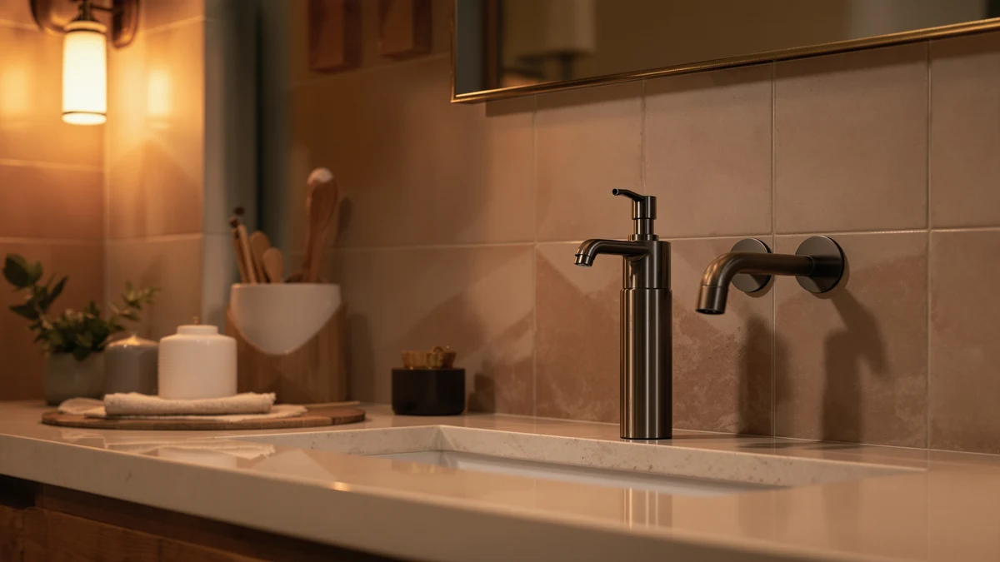

EnBath Horizontal Commercial Soap Dispenser Review (2026): Worth It?
Prices and picks verified as of November 2026. Independent, reader-supported reviews.


Quick Answer
This EnBath Horizontal Commercial Soap Dispenser review compares the $35.97 EnBath Horizontal Commercial Soap Dispenser Wall against three alternatives priced from $31.99 to $35.97, weighing its ABS plastic, horizontal-mount build against EnBath's own vertical pump, a three-bottle shower set from LUSSPA, and a stainless steel pick from VANNSOO. If you specifically need a horizontal mounting profile and don't mind that it's plastic rather than metal, the EnBath pick is a reasonable choice, and if durability or shower organization matters more to you, the VANNSOO and LUSSPA alternatives below are worth a look.
Our pick: Horizontal Commercial Soap Dispenser Wall, $35.97 Check Price on Amazon
Bottom line: our top pick is the Horizontal Commercial Soap Dispenser Wall Mount at $35.97.
Things to Know Before You Buy
- This EnBath Horizontal Commercial Soap Dispenser review focuses on the $35.97 EnBath Horizontal Commercial Soap Dispenser Wall, built for horizontal wall mounting in office and restroom settings.
- EnBath's own Commercial Soap Dispenser Wall Mount alternative matches the price at $35.97 but mounts vertically instead of horizontally.
- The LUSSPA Shower Shampoo Dispenser Wall Mounted costs less at $33.26, but it's a three-bottle shower set rather than a single soap pump.
- The VANNSOO Commercial Soap Dispenser Wall costs the least at $31.99 and swaps the ABS plastic for stainless steel.
- We did not physically install any of these dispensers. This EnBath Horizontal Commercial Soap Dispenser review comes from comparing listed specs, pricing and verified owner feedback.
This EnBath Horizontal Commercial Soap Dispenser review compares the $35.97 EnBath Horizontal Commercial Soap Dispenser Wall against three alternatives priced from $31.99 to $35.97, weighing its ABS plastic, horizontal-mount build against a vertical EnBath pump, a three-bottle LUSSPA shower set, and a VANNSOO stainless steel dispenser built for the same restrooms and breakrooms. You want a dispenser that survives a high-traffic sink without clogging, dripping down the wall, or needing a refill every other day, and the pitch on this EnBath pick is a horizontal, wall-mounted pump designed for exactly that kind of repeat commercial use. We researched the EnBath Horizontal Commercial Soap Dispenser Wall's listed material and mounting style against EnBath's own vertical Commercial Soap Dispenser Wall Mount, the LUSSPA Shower Shampoo Dispenser Wall Mounted three-bottle set, and the VANNSOO Commercial Soap Dispenser Wall, a similarly priced stainless steel pump. Our goal is to tell you whether the horizontal ABS build earns its place in a busy restroom, and which alternative fits better if your bathroom calls for something different.
The short version is that the EnBath Horizontal Commercial Soap Dispenser Wall holds up as a straightforward, wall-mounted workhorse, but its ABS plastic build and the identical price tag it shares with its own vertical sibling are both worth flagging before you compare it to the alternatives below. Our product data lists ABS plastic and a horizontal orientation for this pick, which keeps it light and easy to mount flat against a wall but doesn't tell us how it holds up against the VANNSOO's stainless steel body over years of heavy use. A well-sealed plastic pump can still last for years in a lower-traffic office bathroom, though a stainless body generally shrugs off dents and rust better in busier commercial spaces. If the horizontal orientation matters more to you than material, this EnBath pick is the obvious choice, and if you'd rather organize shower products instead of a single soap pump, the LUSSPA alternative below trades the single pump for three refillable bottles. This EnBath Horizontal Commercial Soap Dispenser review walks through all three tradeoffs before you spend $35.97.
Why You Should Trust Us
Ilane Tall covers home and bath products for Best Soap Dispensers, and this EnBath Horizontal Commercial Soap Dispenser review follows the same process behind every article on this site: pulling manufacturer specs, current pricing and verified buyer feedback before drawing a conclusion. We do not run a fake testing lab, and we don't claim to have mounted every dispenser we cover on an actual restroom wall. Instead, we compare what's actually documented: price, listed materials and what verified owners report after buying. When a listing's description leaves out details that matter for a commercial bathroom, like how a horizontal ABS pump holds up next to a stainless steel one, we flag it here instead of repeating the manufacturer's marketing copy. Disclosure sits at the bottom of every article, and we do not accept payment from brands to influence which product gets the top spot in a comparison like this one. Every price and specification cited in this EnBath Horizontal Commercial Soap Dispenser review comes directly from the product's current Amazon listing rather than an old cached page, so figures can shift slightly after publication.
Our Research Experience
We did not purchase or physically mount the EnBath Horizontal Commercial Soap Dispenser Wall for this EnBath Horizontal Commercial Soap Dispenser review. Instead, we compared its listed price, material and mounting orientation against three direct alternatives, including EnBath's own vertical model, and cross-referenced verified owner feedback where it exists. This research-based approach means we can't report how the pump feels under a daily hand or how the ABS housing holds up after months on a restroom wall, but it does let us weigh objective facts, price and listed construction side by side without one unit's manufacturing variance skewing the verdict. On similarly built wall-mounted pumps, the pump head is usually the first part to wear out, regardless of whether the body underneath is plastic or steel, and we factored that pattern into the verdict below.
Overview & Specs

Horizontal Commercial Soap Dispenser Wall
What we like
- Horizontal wall mount keeps it out of the way of sinks and countertops in busy restrooms.
- Priced at $35.97, in line with EnBath's own vertical alternative and within a few dollars of the LUSSPA and VANNSOO picks.
- Manual pump design means no batteries or sensors to replace over time.
Flaws but not dealbreakers
- The product's own specs table lists ABS plastic rather than metal, which may wear faster than the VANNSOO's stainless steel body in high-traffic spots.
- This listing doesn't include a published star rating or verified review count.
- A manual pump means no touchless convenience if that's what your restroom needs.
| Material | ABS plastic |
| Size | horizontal |
The EnBath Horizontal Commercial Soap Dispenser Wall is built around a horizontal, wall-mounted pump, and at $35.97 it matches the price of EnBath's own vertical Commercial Soap Dispenser Wall Mount almost exactly. That price sits above the VANNSOO Commercial Soap Dispenser Wall at $31.99 and the LUSSPA Shower Shampoo Dispenser Wall Mounted at $33.26. For a dispenser meant to bolt onto a restroom or breakroom wall rather than sit on a countertop, a horizontal mount at the higher end of this four-product comparison is a reasonable starting point for this EnBath Horizontal Commercial Soap Dispenser review.
Our product data lists ABS plastic as the material for this EnBath pick, which keeps the unit light and straightforward to install but trades away some of the dent resistance you'd get from the VANNSOO's stainless steel body. That's not necessarily a dealbreaker: a well-sealed plastic pump can hold up for years in a lower-traffic office bathroom, and it's typically easier to mount without specialized hardware. Still, if your restroom sees heavy daily use or you're worried about wear and tear, the metal build on the VANNSOO alternative below is worth comparing before you commit to $35.97. Because the listing describes the unit simply as horizontal without breaking out exact dimensions, measure your wall space and existing mounting holes before you order rather than assuming it will match the fixture you're replacing.
What We Liked
The biggest strength in this EnBath Horizontal Commercial Soap Dispenser review comes down to its horizontal wall mount. A pump that bolts flat against the wall in a horizontal orientation keeps countertops clear in a busy restroom or breakroom, and at $35.97 it costs the same as EnBath's own vertical alternative while giving you a different mounting profile to work with. A manual pump also means there's no sensor or battery compartment to fail, which simplifies maintenance for whoever is responsible for keeping the dispenser filled and working.
What Could Be Better
The ABS plastic build is the most obvious tradeoff in this EnBath Horizontal Commercial Soap Dispenser review. Our product data lists plastic rather than metal for this pick, and if you're shopping specifically for a dispenser that can take a beating in a high-traffic commercial restroom, this listing doesn't match the durability of the VANNSOO's stainless steel body. We also can't point to a published star rating or review count for this listing, which makes it harder to confirm long-term wear the way we can for products with a longer review history. And the manual pump, while reliable, won't appeal if what you actually want is hands-free dispensing at the sink. None of these are dealbreakers on their own, but stacked together they're worth weighing against the roughly four dollars you'd save by choosing the VANNSOO instead.
Who Is It For?
In this EnBath Horizontal Commercial Soap Dispenser review, we think the EnBath Horizontal Commercial Soap Dispenser Wall fits a restroom or breakroom wall where you specifically need a horizontal mounting profile and don't mind that it's built from ABS plastic rather than metal. It's a reasonable choice if you're replacing a dispenser in a lower-traffic office bathroom and want to avoid batteries entirely, or if you prefer a pump you can service yourself without electronics involved. It's a weaker fit if your restroom sees heavy daily traffic and needs the dent resistance of the VANNSOO's stainless steel build, or if you'd rather have automatic, touchless dispensing than a manual pump.
Alternatives to Consider
In this EnBath Horizontal Commercial Soap Dispenser review, if the plastic build or the horizontal-only mount gives you pause, three alternatives are worth a look, including EnBath's own vertical pump, a three-bottle shower dispenser set, and a stainless steel pick from VANNSOO. Each one differs from this EnBath pick in a specific way, whether that's the mounting orientation, the chamber count or the material, so weigh those differences against your own restroom traffic and habits before you buy. Check out our full commercial soap dispenser roundup for more options beyond these three.

Also Great
Commercial Soap Dispenser Wall Mount
EnBath's own Commercial Soap Dispenser Wall Mount matches the horizontal pick's $35.97 price but swaps the orientation for a vertical mount, worth a look if your wall space runs tall rather than wide.
$35.97
Check Price on Amazon
Also Great
Shower Shampoo Dispenser Wall Mounted
The LUSSPA Shower Shampoo Dispenser Wall Mounted costs less at $33.26 and trades a single soap pump for three refillable bottles, a better fit if you need to organize shampoo, conditioner and body wash instead of soap alone.
$33.26
Check Price on Amazon
Best Value
VANNSOO Commercial Soap Dispenser Wall
The VANNSOO Commercial Soap Dispenser Wall costs the least at $31.99 and swaps the ABS plastic for stainless steel, worth paying attention to if durability in a high-traffic restroom matters more than the horizontal mount.
$31.99
Check Price on AmazonFrequently Asked Questions
Is the EnBath Horizontal Commercial Soap Dispenser Wall worth buying?
Based on our EnBath Horizontal Commercial Soap Dispenser review, the EnBath Horizontal Commercial Soap Dispenser Wall is worth buying if you need a horizontal wall-mounted pump at $35.97 and don't mind that its own specs table lists ABS plastic rather than metal. It doesn't carry a published star rating in our product data, so weigh that gap against the price and mounting orientation before you decide.
How does this EnBath pick compare to the LUSSPA and VANNSOO alternatives?
EnBath's own Commercial Soap Dispenser Wall Mount costs the same $35.97 but mounts vertically instead of horizontally. The LUSSPA Shower Shampoo Dispenser Wall Mounted sells for $33.26 and swaps a single pump for a three-bottle shower set. The VANNSOO Commercial Soap Dispenser Wall is the cheapest of the four at $31.99 and swaps the ABS plastic for stainless steel.
Is a horizontal wall-mounted dispenser better than a vertical one?
Neither orientation is inherently better. A horizontal mount like this EnBath pick's fits wider, shorter wall spaces, while a vertical mount like EnBath's own alternative fits narrower, taller spots next to a sink.
Final Verdict
This EnBath Horizontal Commercial Soap Dispenser review comes down to a straightforward tradeoff: the EnBath Horizontal Commercial Soap Dispenser Wall's horizontal mount and $35.97 price make it a reasonable pick for a restroom or breakroom wall that calls for that specific orientation, as long as you accept ABS plastic instead of a metal body. If durability matters more than orientation, the VANNSOO Commercial Soap Dispenser Wall at $31.99 is worth comparing, and if you need multiple shower bottles instead of a single soap pump, the LUSSPA alternative above covers that case. For most people mounting a horizontal commercial soap dispenser on a budget, EnBath is the better buy, provided the plastic build doesn't change your mind.